Embracing Shadows: The Art of Tanizaki in Modern Spaces
Why the omission of light is the ultimate tool for creating a calming, intimate, and sacred home environment.
Read Article →
6 Min Read
The world's only destination for Dark Japandi interior design — where wabi-sabi philosophy meets Scandinavian minimalism, draped in intentional darkness.
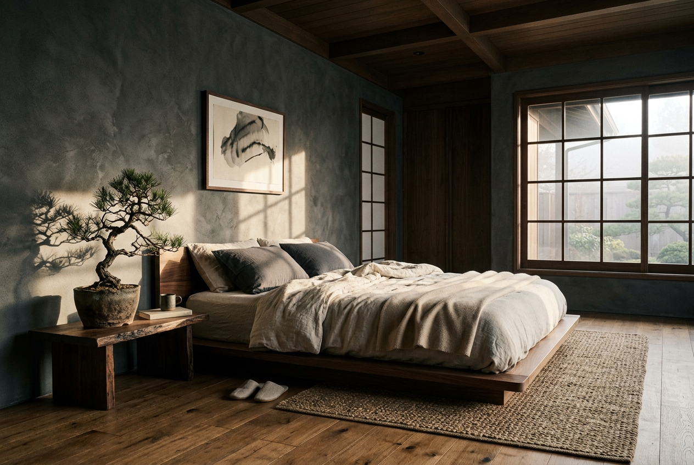
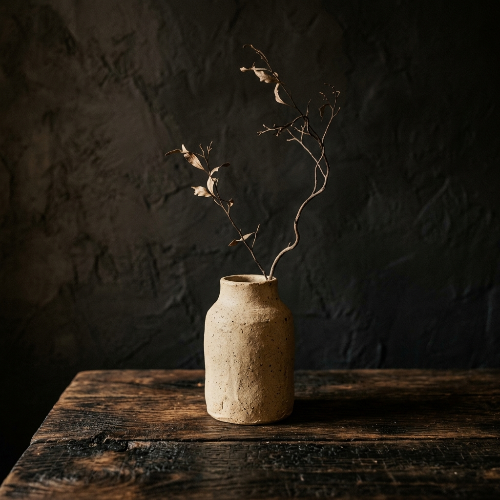

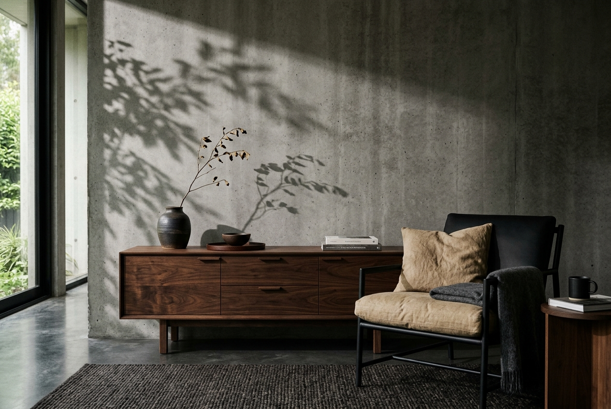

Dark Japandi strips away the noise of modern life to reveal the quiet luxury of empty space (Ma), raw textures, and daylight playing against dark, atmospheric shadows. By focusing on rich, organic tones instead of stark whites, we create spaces that feel like a protective sanctuary.
Embracing Shou Sugi Ban paneling and dark walnut furniture to ground the space.
Minimalist Scandinavian furniture with clean silhouettes and functional utility.
Focusing on breathing room, intentional layout, and single sculptural accents.
Celebrating the interplay of warm, soft light filtering through atmospheric darkness.
Browse custom-styled rooms carefully configured for silence, depth, and rich organic materials.
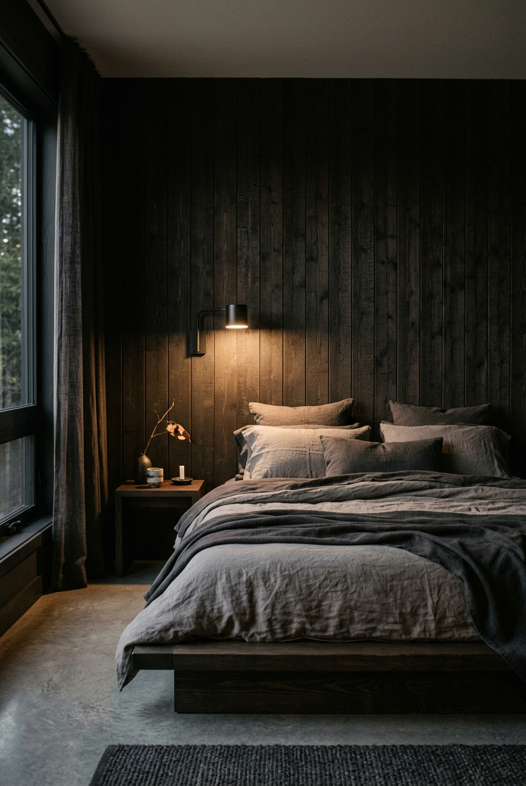
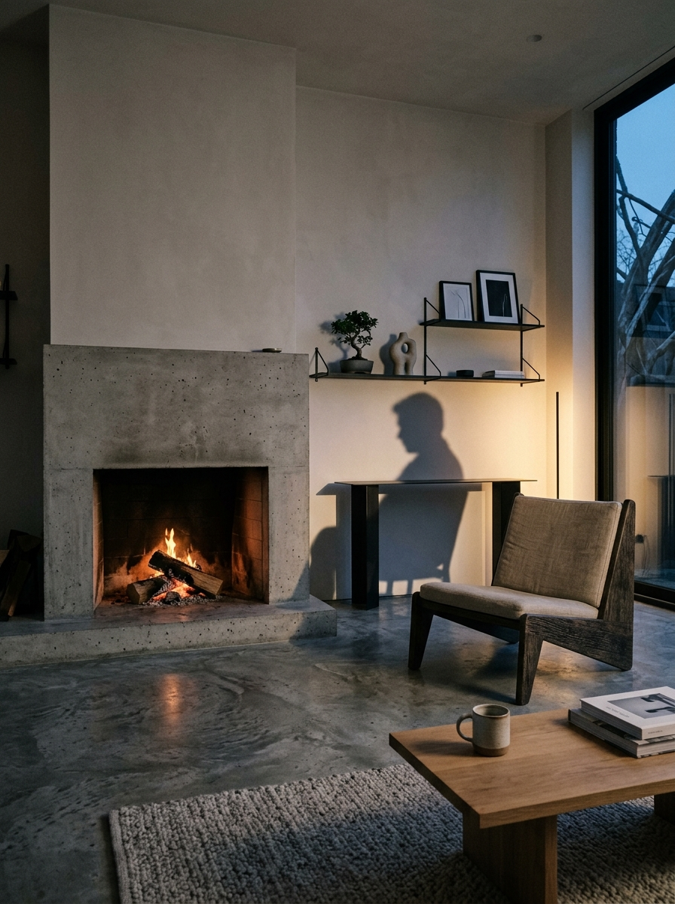
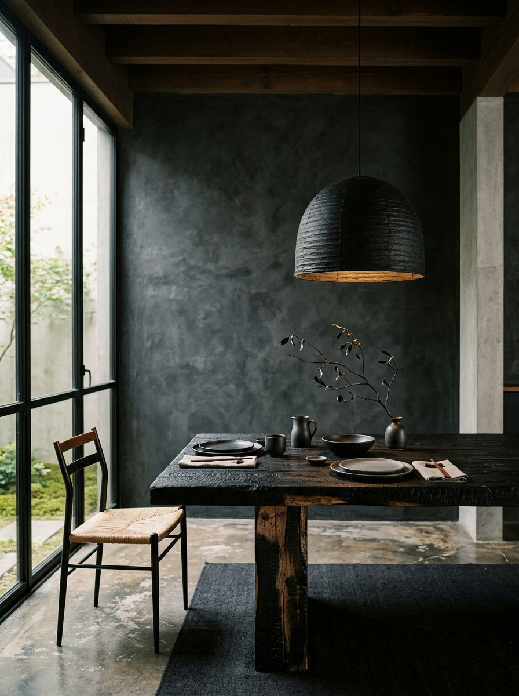
Take a deep dive into our most celebrated, custom-curated design templates.
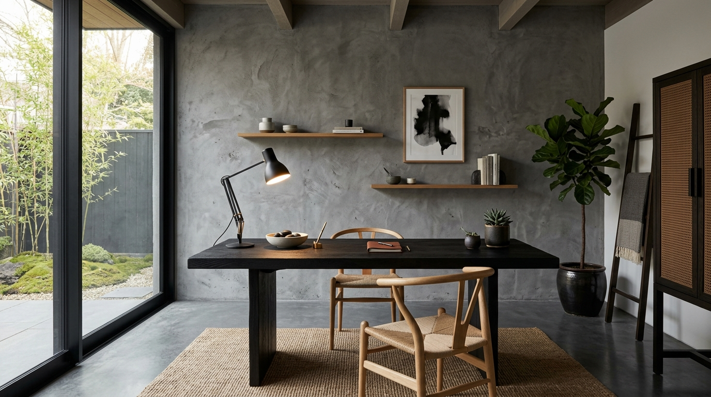
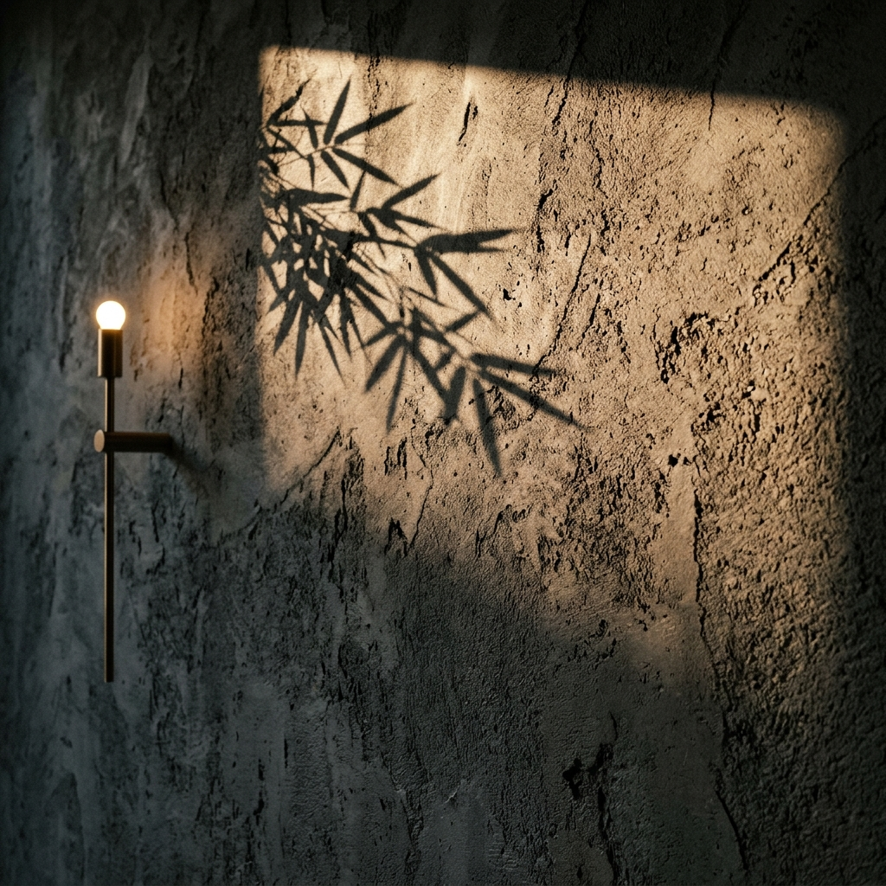
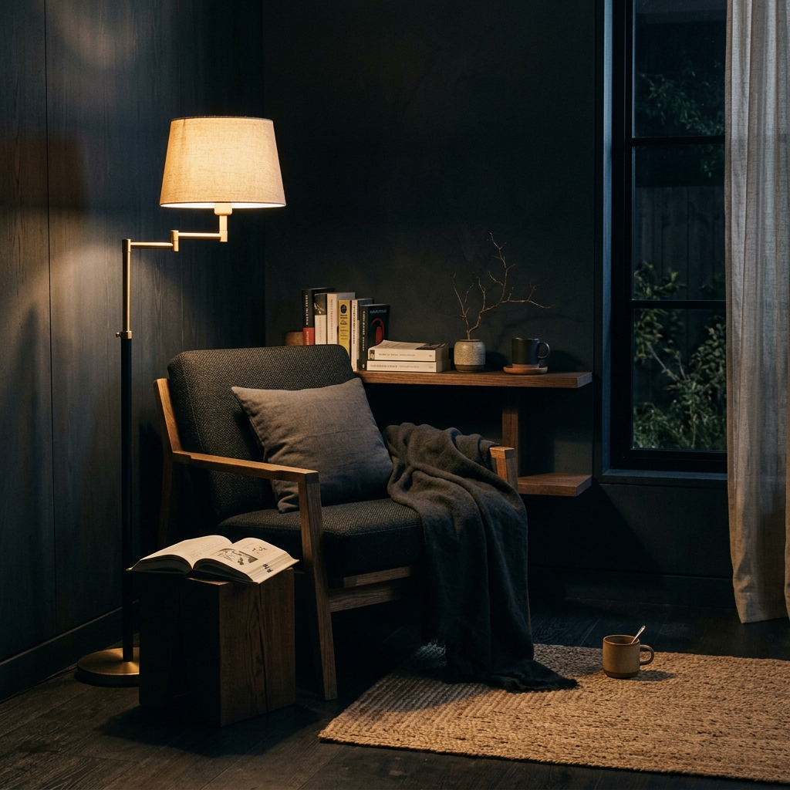
The natural foundations that define the authentic design language of Dark Japandi.
Traditional carbonized wood siding (Shou Sugi Ban) that adds deep organic contrast and texture.
Textured handmade paper used in sliding partitions and soft lanterns for warm, diffused light.
Rough earthen walls with fine texture that absorb sound and bounce light with quiet imperfection.
Split-face dark stone slates used for flooring and wet surfaces, giving a raw, mountainous feeling.
Hover over the glowing pins in our interactive visual meditations to explore and purchase curated pieces.
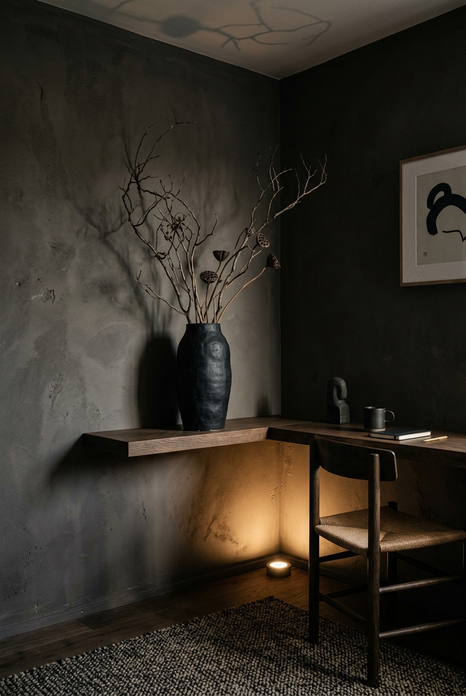
Lounge Seating corner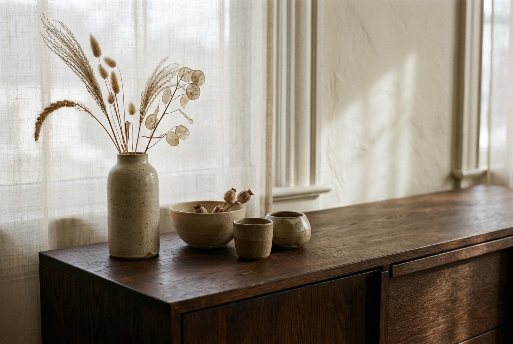
Wabi LowboardHear from those who have transformed their homes into moody, quiet spaces of sanctuary.
"KuroWabi completely changed my perspective on space. Living in intentional shadows has brought a profound sense of calm to my daily life."
"The collections are incredibly curated. The balance of warm textures and deep, moody tones feels premium, tactile, and highly artistic."
"Every guide is a masterclass in wabi-sabi. It's the perfect resource for anyone looking to design a space with true soul."
Receive our free 120-page design guide 'Shadow & Sanctuary', alongside curated collections, room layouts, and material palettes sent twice a month.
No spam. Unsubscribe at any time. Respecting space and silence.
Explore our editorial archive on wabi-sabi philosophy, material pairings, and dark interior design.
Why the omission of light is the ultimate tool for creating a calming, intimate, and sacred home environment.
A complete guide to proportions, low-slung framing, and selecting textured linen sheets in ink and slate tones.
How this traditional Japanese technique provides textured, carbonized wood that adds deep organic contrast to minimal walls.